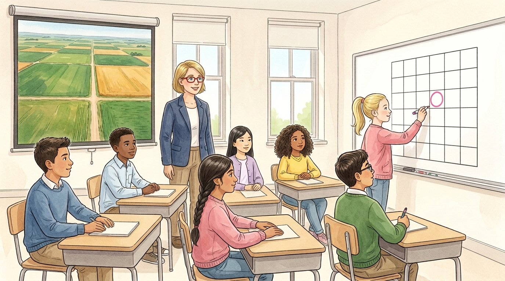

Grade 8 · Social studies · SS.6-8.G.2.MdC
The squares you can see from the sky
A story about an airplane window, a law from 1785 that turned the Midwest into a checkerboard, and the square set aside for schools.
Los cuadrados que se ven desde el cielo. Un cuento sobre la ventanilla de un avión, una ley de 1785 que convirtió el Medio Oeste en un tablero de ajedrez y el cuadrado reservado para las escuelas.
Social studies words you will learn
Tap a green word to see what it means.
Toca una palabra verde para ver qué significa. Con la ayuda activada, verás también la definición en español.
The story
El cuento está en inglés. Pulsa «Listen to the story» para escucharlo y toca las palabras verdes cuando no entiendas una.
Athena had flown to visit her grandmother over the weekend. "From the airplane window, Illinois looked like a checkerboard," she said. "Perfect squares of fields, with roads running straight north and straight east." Ms. Novak smiled and projected a photo that looked just like what Athena described. "That checkerboard was drawn by a law," she said.
"On May 20, 1785, Congress passed the Land ," said Ms. Novak. "It said that the western lands would be measured before they were sold, in squares called , six miles on each side." Athena drew a big square on the board.
"Each township was divided into 36 , each one mile on each side," said Ms. Novak. "One section is 640 ." Athena divided her square into six rows of six small squares and numbered them. "So a quarter of a section is 160 acres," said Israel, who had his calculator out. "That's the size of a lot of family farms in the old days," said Ms. Novak.
"Here is my favorite part," said Ms. Novak. "The law reserved section number 16 in every township for the support of public schools." Athena circled square 16. "So schools were part of the plan from the start," said Salma.
Ms. Novak showed a map of Chicago. "Chicago's of streets fits into the pattern of townships and sections that began with this law," she said. "Many of our main streets are one mile apart, along the old section lines." Daniel counted on the map. "Madison to Roosevelt, Roosevelt to Cermak… they're all about a mile apart!"
Then Ms. Novak asked a harder question. "Before anyone drew these squares, who lived on this land?" "The Native nations," said Selena. "Yes," said Ms. Novak. "The land could be surveyed and sold only after Native nations gave it up in treaties, called , often under pressure from the government. The straight lines on the map didn't follow their villages, their rivers or their hunting grounds."
"So the same squares mean different things to different people," said Elías. "For a farmer from the East, a chance to own land. For a Native nation, a home divided on paper." "That's why we look at a map from more than one perspective," said Ms. Novak.
That afternoon, Athena found her school on the map. It wasn't in section 16, but it was close. Sophia wrote in her notebook: The land remembers the law. You can see it from the sky.
Pause to connect
Visual arts · VA:Cn11.1.8
Read the Library of Congress blog post about land surveying and find the map of Allin Township, in McLean County, Illinois.
Lee la publicación del blog de la Biblioteca del Congreso sobre la medición de tierras y busca el mapa de Allin Township, en el condado de McLean, Illinois.
Surveying: the art of measuring land (Library of Congress) (opens in a new tab)
What you will see: Old maps drawn with straight lines that cross to make a grid. One of them shows an Illinois township divided into 36 numbered sections, with a small corner of section 16 marked for a school.
Lo que verás: Mapas antiguos dibujados con líneas rectas que se cruzan y forman una cuadrícula. Uno de ellos muestra un municipio de Illinois dividido en 36 secciones numeradas, con una pequeña esquina de la sección 16 marcada para una escuela.
- Find the school land in the township map. Why do you think the mapmaker marked it so clearly?Busca el terreno de la escuela en el mapa del municipio. ¿Por qué crees que el cartógrafo lo marcó con tanta claridad?
- The map shows straight lines, but not rivers or old trails as the main shapes. What does that tell you about what its makers valued?El mapa muestra líneas rectas, pero no ríos ni antiguos senderos como formas principales. ¿Qué te dice eso sobre lo que valoraban sus autores?
Think about it, then answer in your notebook or talk it over with someone at home.
Check your thinking
The school land was a promise of the law, and marking it clearly kept it from being sold for something else. The straight lines show that the makers valued order, measurement and land that could be bought and sold. A Native map of the same place might have shown rivers, villages and paths instead.
Glossary
- ordinance
- A law or official rule passed by a government.
- ordenanza: Una ley o regla oficial aprobada por un gobierno.
- township
- In the land survey, a square of land six miles on each side, divided into 36 sections.
- municipio (township): En la medición de tierras, un cuadrado de seis millas por lado, dividido en 36 secciones.
- section
- A square of land one mile on each side, or 640 acres.
- sección: Un cuadrado de tierra de una milla por lado, o 640 acres.
- acre
- A unit of area used for land. One square mile is 640 acres.
- acre: Una unidad de superficie para medir terrenos. Una milla cuadrada equivale a 640 acres.
- grid
- A pattern of straight lines that cross each other to make squares or rectangles.
- cuadrícula: Un diseño de líneas rectas que se cruzan y forman cuadrados o rectángulos.
- land cession
- Land that a nation gives up to another, often through a treaty and often under pressure.
- cesión de tierras: Tierras que una nación entrega a otra, muchas veces por un tratado y muchas veces bajo presión.
Questions
Choose the correct answer. If you make a mistake, the story shows you where the answer is.
Elige la respuesta correcta. Si te equivocas, el cuento te muestra dónde está la respuesta.
-
Question A. What did the Land Ordinance of 1785 say about the western lands?
¿Qué decía la Ordenanza de Tierras de 1785 sobre las tierras del oeste?
The law said the lands would be measured in townships, six miles on each side, before they were sold.
-
Question B. How big is one section?
¿De qué tamaño es una sección?
A section is one mile on each side, or 640 acres. A quarter of a section is 160 acres.
-
Question C. What was section 16 reserved for?
¿Para qué se reservaba la sección 16?
The law reserved section 16 in every township for the support of public schools.
-
Question D. Why are many main streets in Chicago about one mile apart?
¿Por qué muchas calles principales de Chicago están a una milla de distancia entre sí?
Chicago's grid fits into the township and section pattern that began with the 1785 law.
-
Question E. What had to happen before the land could be surveyed and sold?
¿Qué tenía que ocurrir antes de que la tierra se pudiera medir y vender?
The land was surveyed and sold only after Native nations gave it up in land cessions, often under pressure.
Challenge: explain your thinking
Use a map and math
Draw a township with its 36 sections. A family buys a quarter section, and the school uses section 16. How many acres does the family have? How many acres are in the whole township? Then explain one way this grid helped settlers and one way it ignored the people who lived there before.
Usa un mapa y las matemáticas. Dibuja un municipio con sus 36 secciones. Una familia compra un cuarto de sección y la escuela usa la sección 16. ¿Cuántos acres tiene la familia? ¿Cuántos acres hay en todo el municipio? Después explica una forma en que esta cuadrícula ayudó a los colonos y una forma en que ignoró a las personas que vivían allí antes.
Answer in your notebook or talk it over with a classmate. Use evidence from the story.
Responde en tu cuaderno o coméntalo con un compañero. Usa evidencia del cuento.
Check your thinking
The family has 640 ÷ 4 = 160 acres. The whole township has 36 × 640 = 23,040 acres. The grid helped settlers because every piece of land had a clear number and border, so it was easy to buy, sell and record. But the straight lines ignored Native villages, rivers and trails, and the land was available only after Native nations gave it up.
Go further
Look at a map of your own neighborhood or town. Find two main streets that are about one mile apart. Do you think they follow old section lines?
Para ir más lejos. Mira un mapa de tu barrio o tu pueblo. Busca dos calles principales que estén a una milla de distancia más o menos. ¿Crees que siguen antiguas líneas de sección?
Check your thinking
In much of Illinois, main roads run north-south and east-west, about one mile apart, along the old section lines. In Chicago, for example, many big streets are about a mile apart. Where streets curve or run diagonally, they often follow older paths, like Native trails or rivers.